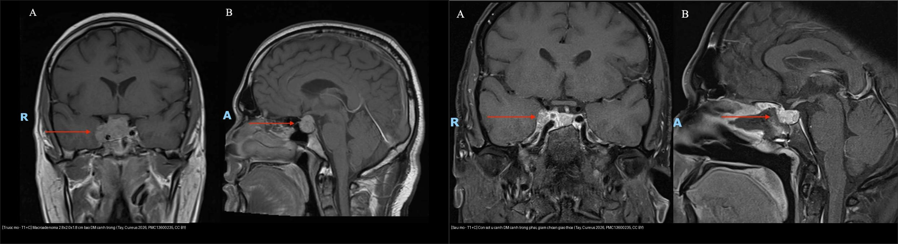
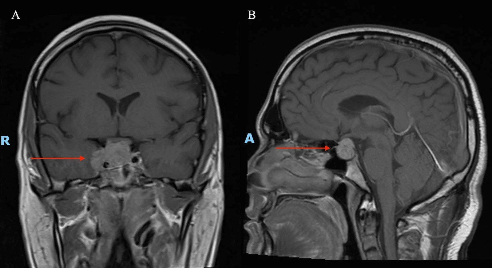
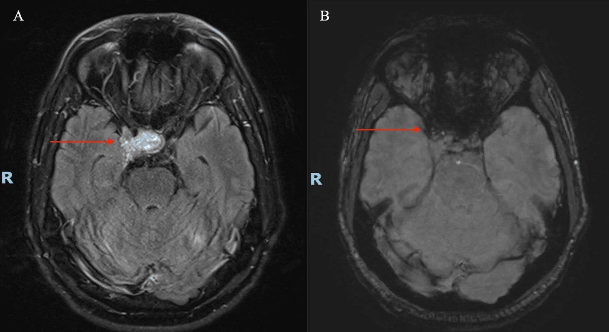
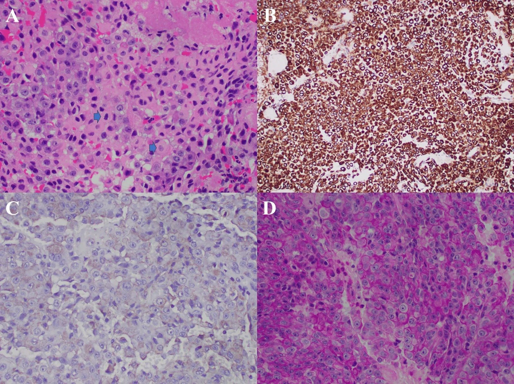

432 — Vùng yên-giao thoa: adenoma vs đột quỵ tuyến yên / Sellar masses & Apoplexy
Tags: pattern:khoi-yen vung:giao-thoa pattern:dot-quy-tuyen-yen protocol:MRI-yen
Mức chắc chắn (certainty): tổng hợp y văn (literature synthesis) — nhóm tự biên từ y văn mở (Europe PMC/PMC, Cureus, CC BY) + ca minh họa có giấy phép; không phải ca nguyên văn đơn lẻ.
Câu chốt lâm sàng: khối vùng yên + đau đầu dữ đột ngột + liệt dây III = nghĩ đột quỵ tuyến yên (pituitary apoplexy) cho tới khi loại trừ; nếu liệt III kèm đồng tử giãn thì loại phình động mạch thông sau trước tiên (CTA/MRA cấp cứu).
1. Tổng quan — bán manh thái dương + đột quỵ tuyến yên
- Adenoma tuyến yên: u biểu mô tuyến yên (PitNET), chèn ép giao thoa thị từ dưới → bán manh thái dương hai bên (bitemporal hemianopia) do các sợi bắt chéo (decussating) của võng mạc mũi bị tổn thương trước. Phân theo kích thước: vi tuyến (microadenoma) < 10 mm (thường tiết prolactin — PRL) vs macro ≥ 10 mm (không tiết + chèn ép, hoặc tiết GH/ACTH).
- Đột quỵ tuyến yên (pituitary apoplexy): xuất huyết/nhồi máu trong u, biến chứng 2–12% adenoma tuyến yên; tam chứng kinh điển đau đầu dữ đột ngột + nôn + giảm thị/liệt vận nhãn, kèm suy thượng thận cấp (đe dọa tính mạng) → cortisol tĩnh mạch NGAY + mổ giải áp cấp cứu qua xoang bướm.
- TẠI SAO MRI thấy máu (theo Argon): sản phẩm giáng hóa hemoglobin (deoxyhemoglobin → methemoglobin nội bào) → trên đuôi tín hiệu bất đồng (heterogeneous) có thể thấy mức dịch–dịch (fluid level) trên FLAIR (huyết thanh nổi trên huyết khối lắng) và hiệu ứng "nở hoa" (blooming artifact) trên SWI/T2* — do deoxyhemoglobin/hemosiderin gây bất đồng cảm ứng từ (susceptibility) làm mất tín hiệu lan rộng. Đây là hai dấu hiệu "khóa" chẩn đoán đột quỵ.
- Số liệu định lượng ca minh họa (dưới đây): macroadenoma 2,8 × 2,0 × 1,8 cm, bao động mạch cảnh trong (ICA) hai bên + lan xoang hang, đột quỵ dạng nhồi máu xuất huyết; mô bệnh Crooke cell adenoma (CCA); mổ nội soi qua xoang bướm cắt dưới toàn bộ (subtotal) vì bao ICA hai bên; VMAT 54 Gy/30 phân liều khi còn sót.
- Crooke cell adenoma (CCA) — vì sao đáng nhớ: là PitNET tế bào corticotroph hung hãn nhất: macro 81%, tái phát sau mổ 56%, xâm lấn 71–81%, lan trên yên 64%, xâm lấn xoang hang 46%; thường "câm" nội tiết (endocrinologically silent) → không có hội chứng Cushing để cảnh báo, nên dễ chẩn đoán muộn. Ca dưới đây là ca thứ 10 trong y văn CCA kèm đột quỵ.
2. Gamut khối vùng yên + liệt dây III
- Theo vị trí tương quan giao thoa:
- Dưới giao thoa (adenoma): đẩy giao thoa lên trên → bán manh thái dương, u to đều, giao thoa căng nằm vắt trên u.
- Trên giao thoa (craniopharyngioma, u màng não củ yên/planum, u tế bào mầm): đẩy giao thoa xuống → thường kèm đái tháo nhạt, vôi hóa/nang.
- Trong xoang hang (schwannoma, u màng não, di căn): liệt các dây III/IV/V1–V2, không hiếm khi "giả adenoma".
- Theo nội dung khối: đặc ngấm đồng nhất (adenoma); vôi hóa + nang (craniopharyngioma — 2 đỉnh tuổi: 5–14 và > 50); nang giả (Rathke); khối mỡ (u quái, lipoma hệ thần kinh trung ương); dịch mức + blooming (đột quỵ).
- Theo cấp/không cấp: đột quỵ tuyến yên (đau dữ + liệt III + suy thượng thận) là cấp cứu; adenoma không tiết chèn ép là bán cấp.
- Liệt dây III đơn độc — 3 nhóm chốt: nhồi máu thần kinh vi mạch (đồng tử GIỮ) vs phình động mạch thông sau (đồng tử GIÃN) vs đột quỵ tuyến yên/u xâm lấn xoang hang (thường kèm tổn thương dây khác). Quy tắc đồng tử: giãn = nguy hiểm mạch máu.
- Gợi nhớ SATCHMO / vùng yên: Sellar adenoma, Apoplexy, Teratoma/germ cell, Craniopharyngioma, Hypophysitis, Meningioma, Other (Rathke cyst, metastasis, aneurysm).
3. Bảng so sánh phân biệt (ma trận đối chiếu)
| Thực thể (entity) | Hình ảnh điển hình (MRI) | Chốt vào (rule-in) | Chốt loại (rule-out) | Gợi ý xác nhận |
|---|---|---|---|---|
| Adenoma (thường) | Khối đặc từ yên, nâng giao thoa, ngấm; T1 đồng tín hiệu, T2 trung tính/sáng; bờ rõ | Bán manh thái dương + hội chứng nội tiết (PRL/GH/ACTH) | Mức dịch + blooming cấp → đột quỵ, không phải u thường | Nội tiết đầy đủ + thị trường (perimetry) + MRI yên lát mỏng |
| Đột quỵ tuyến yên | Mức dịch–dịch trên FLAIR (fluid–fluid level) + blooming trên SWI/T2*; u to nhanh, tín hiệu hỗn hợp | Đau đầu dữ đột ngột + liệt III + giảm thị cấp + suy thượng thận | Thiếu máu cấp tính + không đau/không liệt → u thường tiến triển chậm | Cortisol TM + mổ nội soi giải áp cấp cứu (không chờ MRI xong) |
| Craniopharyngioma | Vôi hóa thô + nang trên yên; hai đỉnh tuổi (trẻ 5–14 & già > 50) | Vôi hóa + nang + đái tháo nhạt + suy yên | Không vôi hóa + người lớn + ngấm đồng nhất → adenoma | Canxi máu/điện giải + nội tiết; mô bệnh |
| Phình động mạch thông sau | Không thấy trên MRI thường quy; túi phình có dòng xoáy | Liệt III kèm ĐỒNG TỬ GIÃN + đau + khởi phát đột ngột | Đồng tử giữ + nhồi máu vi mạch → không phải phình | CTA/MRA cấp cứu song song MRI |
| Crooke cell adenoma (biến thể) | Macroadenoma xâm lấn (xoang hang 46%, trên yên 64%), "câm" nội tiết | U xâm lấn lớn + không hội chứng Cushing | U nhỏ, tăng ACTH rõ → adenoma corticotroph thường | Mô bệnh + nhuộm tối thiểu trên mô còn sống (khối hoại tử dễ âm giả) |

Trái — trước mổ (T1W sau tiêm): macroadenoma 2,8 × 2,0 × 1,8 cm bao động mạch cảnh trong (ICA) và lan xoang hang. Phải — sau mổ: còn sót u cạnh ICA phải, giảm chèn ép giao thoa. Nguồn: Tay EZY et al., Cureus 2026, PMC13600235 (CC BY 4.0). Ảnh ghép letterbox, giữ nguyên tỷ lệ.Dấu hiệu chốt đọc ảnh (theo từng chuỗi xung)
- T1W sau tiêm (coronal + sagittal): u đặc ngấm kém–trung bình bao quanh ICA; ghi quan hệ với giao thoa (đẩy lên/xuống), bao ICA, lan xoang hang, số đo 3 chiều (mm).
- T2W/FLAIR: mức dịch–dịch trong u = chảy máu trong u đang lắng (đột quỵ).
- SWI/T2*: blooming vùng yên = sản phẩm máu (deoxyhemoglobin/hemosiderin) — chốt đột quỵ.
- Nội tiết đầy đủ trước mổ: PRL, GH/IGF-1, ACTH/cortisol, TSH/FT4, FSH/LH; cortisol TM nếu nghi suy thượng thận (không chờ kết quả để chờ mổ).
4. Protocol MRI yên + phân độ
- Protocol: MRI yên lát mỏng 2–3 mm (coronal + sagittal T1W trước/sau tiêm động — dynamic nếu nghi vi tuyến), T2W, FLAIR và SWI/T2* (máu); thị trường (perimetry) + nội tiết đầy đủ trước mổ.
- Phân độ xâm lấn xoang hang (Knosp 0–4): Knosp 3–4 (vượt qua đường nối tâm ICA hai bên / bao quanh ICA) → khả năng không cắt hết được cao, cần cân nhắc xạ bổ trợ. Phân độ Hardy–Wilson cho tầng trên yên/xoang bướm.
- Xử trí:
- Đột quỵ tuyến yên: cortisol TM + mổ nội soi qua xoang bướm giải áp cấp cứu (giảm thị nặng/liệt vận nhãn/rối loạn tri giác = chỉ định mổ rõ).
- Còn sót/xâm lấn: xạ (VMAT 54 Gy/30 phân liều) ± thuốc (dopamine agonist nếu PRL cao).
- Theo dõi: MRI 3–6 tháng/lần trong 2 năm đầu, rồi thưa dần; theo dõi nội tiết thay thế.
flowchart TD
A["Khối vùng yên + đau đầu/giảm thị"] --> B{"liệt dây III?"}
B -->|"Đồng tử GIÃN + đau đột ngột"| C["Nghi PHÌNH mạch thông sau<br/>CTA/MRA cấp cứu"]
B -->|"Đồng tử GIỮ/không rõ"| D["MRI yên lát mỏng + FLAIR + SWI"]
D --> E{"Mức dịch FLAIR + blooming SWI?"}
E -->|Có| F["ĐỘT QUỴ TUYẾN YÊN<br/>Cortisol TM + mổ giải áp cấp cứu"]
E -->|Không| G{"Vôi hóa + nang? Đái tháo nhạt?"}
G -->|Có| H["Craniopharyngioma<br/>mổ + xạ + nội tiết"]
G -->|Không| I["Adenoma<br/>nội tiết + thị trường + Knosp"]
I --> J{"Knosp 3–4 / bao ICA?"}
J -->|Có| K["Cắt dưới toàn bộ + VMAT 54 Gy<br/>(còn sót)"]
J -->|Không| L["Mổ lấy trọn u ± nội khoa"]
5. Biến thể bình thường và cạm bẫy
- Cạm bẫy 1 — liệt III + giãn đồng tử: nghĩ phình mạch trước khi nghĩ u yên — CTA/MRA cấp cứu song song MRI; vỡ túi phình = tử vong nhanh.
- Cạm bẫy 2 — suy thượng thận cấp sau đột quỵ "giết người thầm lặng" — cortisol TM trước mổ, không trì hoãn vì chờ chẩn đoán hình ảnh.
- Cạm bẫy 3 — CCA "câm" nội tiết vẫn ác tính mô học: mô bệnh + Ki-67 quyết định theo dõi/xạ, không dựa vào hormone; khối hoại tử nặng dễ cho miễn dịch âm giả → cần nhuộm tối thiểu trên mô còn sống (bài học từ ca CCA).
- Cạm bẫy 4 — "u yên" có thể KHÔNG phải adenoma: hypophysitis (sau miễn dịch trị liệu/ipilimumab, mang thai) ngấm và dày cuống yên — thử cortisol/steroid, không mổ ngay; nang Rathke tín hiệu T1 sáng (protein) dễ nhầm đột quỵ.
- Cạm bẫy 5 — không loại trừ đột quỵ khi chỉ thấy "u to": mức dịch/blooming có thể mảnh; nếu bệnh cảnh cấp phù hợp, điều trị như đột quỵ dù ảnh chưa đặc hiệu.
- Biến thể bình thường: yên rỗng (empty sella) — dịch DNT lấp yên, tuyến dẹt ra sau — không phải u; dịch nang Rathke nhỏ không triệu chứng chỉ theo dõi.
6. Tự lượng giá — Blind Quiz (ảnh trơn ngoài, đáp án trong)
Ca 1 — Nam đau đầu dữ + liệt III phải + giảm thị. Đọc T1W sau tiêm.

- Hỏi: khối ở đâu, kích thước bao nhiêu? Bao cấu trúc nào? Giao thoa bị gì?
Bấm để hiện đáp án
- Macroadenoma ~2,8 × 2,0 × 1,8 cm từ yên lan xoang hang phải + bao động mạch cảnh trong (ICA), nâng/nén giao thoa → bán manh thái dương + liệt dây III.
- Bước tiếp theo: tìm dấu hiệu đột quỵ (mức dịch FLAIR + blooming SWI) và cortisol TM trước mổ.
- Nguồn ảnh: Tay EZY et al., Cureus 2026 (PMC13600235) — CC BY 4.0.
Ca 2 — Cùng bệnh nhân, thêm 2 chuỗi xung. Đột quỵ tuyến yên?

- Hỏi: hai dấu hiệu nào chốt chảy máu trong u? Vì sao SWI có "blooming"?
Bấm để hiện đáp án
- (A) FLAIR axial: mức dịch–dịch trong khối yên (huyết thanh nổi trên huyết khối lắng); (B) SWI: "blooming" vùng yên.
- Cơ chế: deoxyhemoglobin/hemosiderin gây bất đồng cảm ứng từ → mất tín hiệu lan rộng trên SWI/T2*. Đây là dấu hiệu khóa của đột quỵ tuyến yên → mổ giải áp cấp cứu.
- Nguồn ảnh: Tay EZY et al., Cureus 2026 (PMC13600235) — CC BY 4.0.
Ca 3 — Mô bệnh sau mổ: vì sao quan trọng dù nội tiết "câm"?

- Hỏi: hình thái tế bào gợi ý gì về độ ác tính? Vì sao không thể dựa vào hormone?
Bấm để hiện đáp án
- H&E: tế bào đa giác, nhân nổi rõ, bào tương hyalin quanh nhân — Crooke cell adenoma (CCA), biến thể corticotroph hung hãn (tái phát 56%, xâm lấn 71–81%).
- "Câm" nội tiết → không có Cushing để cảnh báo; chỉ mô bệnh + Ki-67 định hướng theo dõi/xạ. Khối hoại tử nặng dễ cho miễn dịch âm giả → nhuộm tối thiểu trên mô còn sống.
- Nguồn ảnh: Tay EZY et al., Cureus 2026 (PMC13600235) — CC BY 4.0.
Bài liên quan chéo
- 400 – Tổng quan Mắt
- 430 – Đường thị giác (giao thoa)
- 431 – U thần kinh thị (chèn ép thần kinh thị)
- 1710 – Đái tháo nhạt trung ương sau mổ tuyến yên: tam pha, điểm sáng thùy sau trên T1, desmopressin
- 218 – Thoát vị não & úng thủy (hiệu ứng choán chỗ nội sọ)
Ảnh
- Tên file
NNN_slug_Modality_SourceID.jpg; nguồn + giấy phép từng ảnh ởimages/CREDITS.md. - Ảnh ghép đối chiếu:
images/composite_truoc-mo-vs-sau-mo.jpg(letterbox, giữ nguyên tỷ lệ). - Nguồn đầy đủ (link gốc) ở
sources.md.
Không dùng để chẩn đoán độc lập khi chưa có người hướng dẫn.